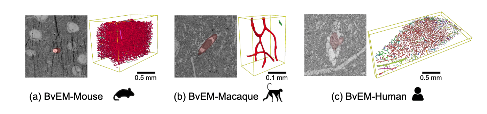
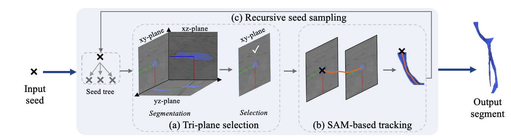

While imaging techniques at macro and mesoscales have garnered substantial attention and resources, microscale VEM imaging, capable of revealing intricate vascular details, has lacked the necessary benchmarking infrastructure. In this paper, we address a significant gap in the field of neuroimaging by introducing the largest-to-date public benchmark, BvEM, designed specifically for cortical blood vessel segmentation in volume electron microscopy (VEM) images. Our BvEM benchmark is based on VEM image volumes from three mammal species: adult mouse, macaque, and human. We standardized the resolution, addressed imaging variations, and meticulously annotated blood vessels through semi-automatic, manual, and quality control processes, ensuring high-quality 3D segmentation. Furthermore, we developed a zero-shot cortical blood vessel segmentation method named TriSAM, which leverages the powerful segmentation model SAM for 3D segmentation. To extend SAM from 2D to 3D volume segmentation, TriSAM employs a multi-seed tracking framework, leveraging the reliability of certain image planes for tracking while using others to identify potential turning points. This approach effectively achieves long-term 3D blood vessel segmentation without model training or fine-tuning. Experimental results show that TriSAM achieved superior performances on the BvEM benchmark across three species.
The proposed BvEM dataset. We proofread the blood vessel instance segmentation (displayed in different colors) in the three largest publicly available VEM volumes: (a) mouse, macaque, and human samples acquired at different VEM labs.
TriSAM framework. (a) Tri-plane selection is first proposed to select the best plane for tracking. (b) SAM-based tracking leverages SAM to perform short-term tracking given a seed location and a tracking direction. (c) Recursive seed sampling exploits potential turning points for long-term tracking.
@article{wan2024trisam,
@article{wan2025trisam,
title={TriSAM: Tri-Plane SAM for zero-shot cortical blood vessel segmentation in VEM images},
author={Wan, Jia and Li, Wanhua and Adhinarta, Jason Ken and Banerjee, Atmadeep and Sjostedt, Evelina and Wu, Jingpeng and Lichtman, Jeff and Pfister, Hanspeter and Wei, Donglai},
journal={IEEE Journal of Biomedical and Health Informatics},
year={2025},
publisher={IEEE}
}
}